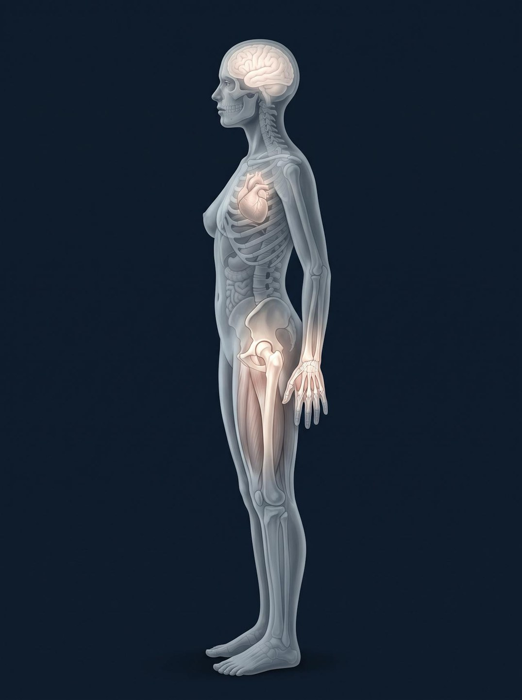

The overhaul. One hero per frame, bleeding to the edge; the words on the dark side; parts named on the object. Her Version C, every headline hers, no generated people.
SLIDE 1The site's own motion behind the title while she talks on camera.
LONGEVITY LIFE ACADEMY PRESENTS
The Longevity Masterclass
Julie Gibson Clark. Live.
01 / 17
SLIDE 1, build 2Her first headline, nothing else.
Welcome. I am very normal.
01 / 17
SLIDE 1, build 3Second in the world against twelve dollars a day. The whole hour lives in that gap, so the two numbers fill the frame.
2nd
in the world, 2023. The Rejuvenation Olympics, ranked by how slowly your body ages.
$12
a day. A gym membership, a short list of supplements, the best vegetables and meat she can buy.
01 / 17
SLIDE 2, build 1The approved slide from the main deck, layout untouched: the brain lit at the front and dimming behind, Running from and Running to. Only more glow, as in the references: the brain lit from within, violet high, teal low, lit dots on the two words.
I didn’t do this to win.
Running from
Dementia. Alzheimer’s. Parkinson’s. The silent decade of decline.
Running to
Here for my son, all the days of his life. Here for grandkids. Another possibility for how we age.
02 / 17
SLIDE 2, build 2The mother who can still carry the groceries at seventy and hold a conversation at ninety.
MY WHY
Why I went down this path.
70
still carrying the groceries.
90
still holding a conversation.
02 / 17
SLIDE 3, build 1Nothing else on screen before any science.
Ten years pass. By this test, I age about six.
03 / 17
SLIDE 3, build 2The gauge at a thousand pixels, every number engraved in its face: 1.0 at the top for most people, the needle on 0.665, the 0.76 tick, the red side aging faster.
DUNEDINPACE, MY PACE OF AGING
Ten years pass. By this test, I age about six.
The speed towards death.
Belsky, eLife 2022. Balachandran 2024.
03 / 17
SLIDE 4, build 1Aging at the root; heart disease, cancer, dementia, type 2 diabetes on the branches.
WHY ANYONE BOTHERS
Longevity is like a cake.
The geroscience hypothesis, Buck Institute. López-Otín et al., Cell 2023.
04 / 17
SLIDE 4, build 2The hero, whole and uncut, bleeding off the left edge. Each layer named with a line to the layer itself, in her words: Sleep, Food, Movement, Stress Management, the thin layer, the icing as Therapies.
HOW I ORGANIZE THE SCIENCE
Longevity is like a cake.
The icing: therapies
Stress Management
Movement
Food
Sleep
The thin layer: menopause
04 / 17
SLIDE 5The map across the whole width, no frame: cost left to right, human evidence bottom to top. Sauna cheap and high; the drips, peptides and stem cells expensive and low; the two-million program at the edge; her coin at the origin.
THE ICING, FROM SAUNA TO RAPAMYCIN
Not wrong. Not first.
Kunutsor et al., Scand. Cardiovasc. J. 2024. Laukkanen et al., BMC Medicine 2018.
05 / 17
SLIDE 6, build 1The cake full height, everything dark but the thin pink layer at the base. The words on the dark side.
THE THIN LAYER
Menopause therapy is a layer, not icing.
Find a certified practitioner through The Menopause Society.
The Menopause Society 2022. FDA 2025.
06 / 17
SLIDE 6, build 2Menopause to ten years after, drawn as a window across the whole slide, because the science she quotes is a window.
THE THIN LAYER
Menopause therapy is a layer, not icing.
Under sixty, or within ten years of menopause: the benefits generally outweigh the risks.
The Menopause Society, 2022 Position Statement. FDA, November 2025.
06 / 17
SLIDE 6, build 3The four layers lit together, the icing and the base dimmed. The sentence that starts the next forty-five minutes.
THE BRIDGE
Four layers hold up the cake.
Sleep. Food. Movement. Stress management.
06 / 17
SLIDE 7The brain's drainage channels, the 2024 imaging that made the repair shift literal, full height at the left. Her five numbers in one column beside it.
LAYER ONE
Sleep is the repair shift.
9:00 PMlights out
5:00 AMup
6:00 PMlast meal, three hours before bed
8:00 PMscreens off
8 hourscool and dark
Piantino, PNAS 2024. Windred, Sleep 2023.
07 / 17
SLIDE 8Nothing but the line.
“I’ll sleep when I die,” said the person aging at twice the normal speed.
08 / 17
SLIDE 9One real plate, full height at the right, its three parts named on the plate itself: protein on the salmon, fiber on the greens, whole food on the lentils. Her five numbers down the left. No diet named anywhere.
LAYER TWO
Take the religion out of your diet.
1 lbof vegetables a day
1 gof protein per pound of goal weight
8 to 6the eating window
10 AMcoffee cutoff
Zeroalcohol on training days
Whole food
the default
Fiber
the lever
Protein
the floor
Dietary Guidelines for Americans, 2020 to 2025.
09 / 17
SLIDE 10One object in three columns, edge to edge: the monitor's trace, insulin docking on the cell, glucose bonded to the red blood cell. Spike, Signal, Scar.
SUGAR AND AGING
The one thing every diet agrees on.
Spike
What the monitor shows after a sugary meal.
Signal
Insulin switches on. On all day, a hallmark of aging.
Scar
Sugar sticks to proteins. HbA1c measures it.
Chiu, Epel and Laraia, JAMA Network Open 2024. Huang et al., BMJ 2023.
10 / 17
SLIDE 10, build 2The half-hour ends on two checkboxes.
YOUR TWO MONDAY CHANGES
Move dinner earlier. Rebuild one plate.
It doesn’t need to be six. Just earlier than it is now.
Protein as the floor, a pile of vegetables, whole food where you can.
10 / 17
SLIDE 11, build 1Two lives the width of the screen, exactly the same length. One lived well to the end; the other ends with 12.4 years in poor health. Same age, different ending.
LAYER THREE
Same age.
one life, lived well to the end
the same life, the same length
same age
12.4 years in poor health
The gap between years lived and years lived well, in the United States. The widest of 183 countries.
Garmany and Terzic, Mayo Clinic, JAMA Network Open 2024.
11 / 17
SLIDE 11, build 2Her body map full height at the left edge. Each callout leaves at the height of the part it serves, brain, heart, heart, bones and muscle, so nothing crosses; each carries the number that predicts how long you live.

Four types of movement, four parts of you.
Mobility and balance
for the brain, and your feet. The one-leg stand.
VO2 max
for the heart. Fitness.
Zone 2
for the heart. 7,000 steps a day.
Weights
for bones and muscle. Grip strength.
López-Bueno 2022. Lang 2024. Ding 2025. Mayo Clinic 2024.
11 / 17
SLIDE 12Seven tall blocks in the four colours of the callouts; the step floor under all seven.
THE DRILL-DOWN
My weekly longevity protocol.
Mon
Strength
Tue
Zone 2
Wed
Strength
Thu
Sprints
Fri
Strength
Sat
Zone 2
Sun
Mobility
8,000 steps a day, every day, under all seven. A walk is a perfectly respectable place to begin.
12 / 17
SLIDE 13, build 1The cake full height with the stress layer lit; her story in three lines beside it.
LAYER FOUR
The layer people skip.
Cortisol, high.
Six months of practice.
Normal. It stayed there.
13 / 17
SLIDE 13, build 2The instruction in type, three lines she leads the room through.
THIRTY SECONDS, TOGETHER
Two in. One long out.
Inhale.
through the nose
Inhale again.
a second sip, through the nose
One long exhale.
slowly, through the mouth
Balban, Spiegel and Huberman, Cell Reports Medicine 2023. 111 people, five minutes a day.
13 / 17
SLIDE 14Her day as one clock the height of the slide, 9 PM at the top, every hour coloured by its layer, the eating window as one band. Built to be screenshotted.
THE DAY IS BUILT BACKWARD FROM BEDTIME
Julie Gibson Clark’s Longevity Protocol
Lights out at nine sets the last meal at six, and the last meal sets the eating window. Sleep decides the rest.
Manoogian et al., Annals of Internal Medicine 2024.
14 / 17
SLIDE 15, build 1The open notebook full height; her line beside it.
BEFORE ANY SUPPLEMENT
You don’t need a lab. You need a notebook.
Every layer shows up in a number you can get without a lab.
15 / 17
SLIDE 15, build 2Three tests as three large lines, one instruction.
BEFORE ANY SUPPLEMENT
Test. Then buy.
Vitamin D
Homocysteine
Red blood cell nutrient levels
Ask your doctor which of these makes sense for you.
15 / 17
SLIDE 15, build 3Her list, each item with its monthly cost and one total, the NOVOS disclosure stated.
WHAT ONE PERSON CHOSE
My list, after my tests.
Each item with its monthly cost, one total, from her website. NOVOS, with the affiliation stated. Not a shopping list.
15 / 17
SLIDE 16The white cake she would actually bake, cut once, full height at the right.
THE WHOLE CAKE
That’s the cake.
Numbers aren’t what kept her doing this for ten years. Three questions did.
16 / 17
SLIDE 17, build 1Why, Intention, Resources on a lit ring; the centre lights only when all three are on.
THREE QUESTIONS, ONE CIRCLE
Why. Intention. Resources.
Take any one away and the other two fall over.
17 / 17
SLIDE 17, build 2The Academy mark, the two lines, the ask that ends the hour.
The same cake, built week by week, with a teacher.
Eighteen weeks. Eighteen live sessions. A class of eight to fifteen.
Your why. Your intention. Your resources. One thing, forty-eight hours.